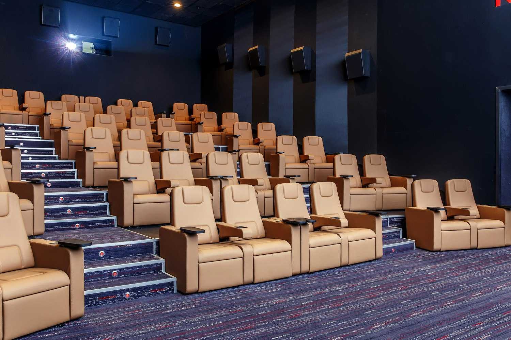
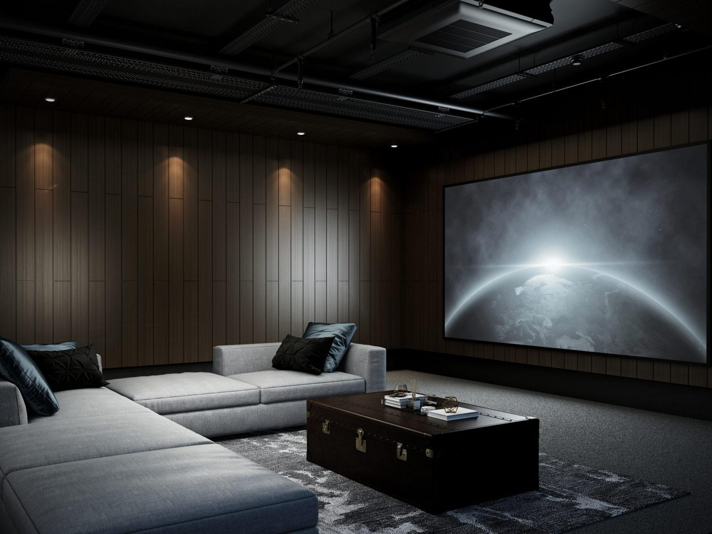
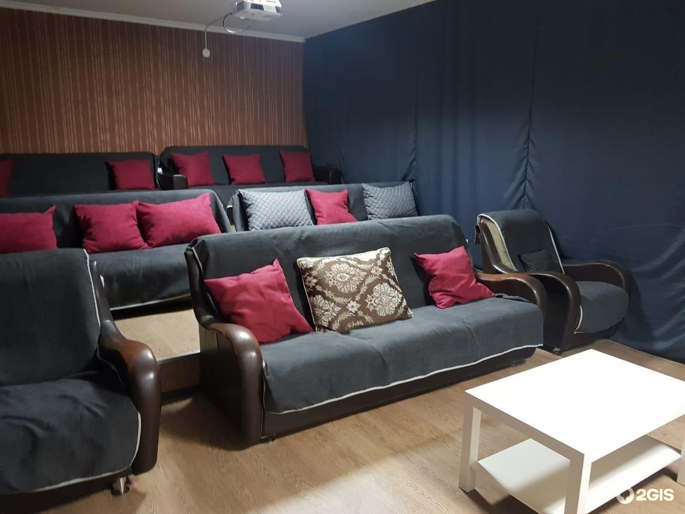

Rooms:
|  | Hall room - First Class Laser Rooms Equipped with NEC NC1201L / laser projectors, the incredible visual experience is enhanced by the Harkness Hall Perlux 180+ screen. The increased reflectivity and pearl surface of the canvas provide excellent color temperature, better contrast and unprecedented brightness, literally drawing the viewer into what is happening on the screen. An important component of First Class Laser is not only laser projectors, but also comfort.The leather chairs of the Himmola and Figueras brands installed in the hall have a wide armrest, a holder for drinks, an automatic control mechanism for reclining the backrest and footrests. There are no more than 50 seats in such halls, which creates a chamber atmosphere and an atmosphere of comfort.
|
|---|
|  | VIP hall - An anti-cinema, where you yourself choose a movie, time and environment. VIP Rooms invites you to enjoy watching your favorite movie in one of five cozy cinemas. Surprise your friends or have an unforgettable romantic date with your significant other. The technical characteristics of the laser equipment allow you to obtain the highest level of images - an extended color gamut (deeper blue and black colors), stable brightness and its even distribution across the entire screen (up to 90%), clear contrast. The services of visitors of this category are provided with personal service, delivery of food and drinks to the hall. Thanks to the Lino Sonego Top Comfort armchairs with a retractable footrest, the session will fly by !
|
|---|
|  | Small Room - Comfort rooms offer personal service and an exclusive menu from the Chef of the Italian restaurant Fellini Grill Pasta Bar. A wide selection of drinks, as well as snacks, be it valovan with black caviar, antipasto italiano or shrimp cocktail, will make your time in the cinema not only interesting, but also enjoyable. For the convenience of the audience, the delivery of the order is carried out directly to the hall. As a compliment to the guests of the Comfort rooms - water and popcorn.
|
|---|